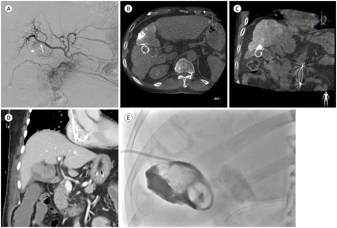
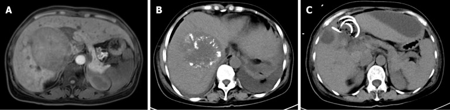
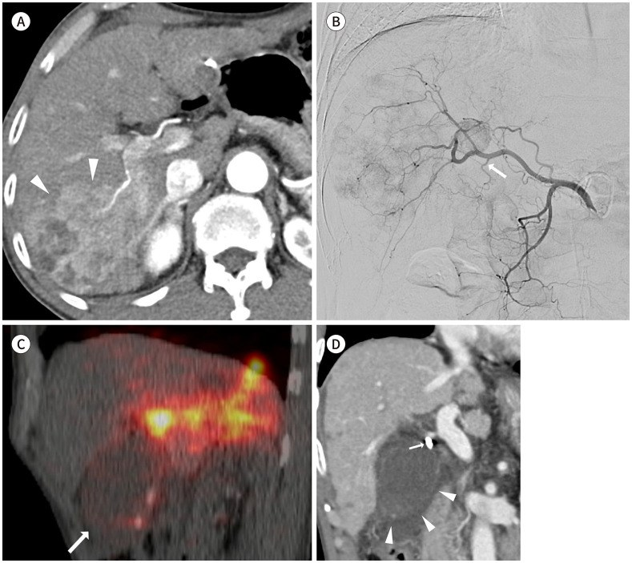

180 — Viêm túi mật THIẾU MÁU sau TACE (và sau TARE): lipiodol trong thành túi mật trên CBCT, ngưỡng thành 4 mm & khi nào phải can thiệp
Tags: pattern:thanh-day pattern:viem-tui-mat vung:tui-mat protocol:TACE-CBCT score:TG18
Mức chắc chắn (certainty): tổng hợp y văn (literature synthesis) — cohort 2.633 lần TACE có CBCT (Kim JY, J Korean Soc Radiol, PMC11009127), ca + tổng quan y văn 2025 (Chen YF, World J Gastrointest Oncol, PMC11866240), mô hình điểm CT cho viêm túi mật phức tạp (Chen Y, Diagnostics, PMC12293178), tổng quan biến chứng TARE (Kim GM, J Korean Soc Radiol, PMC12328914). Số liệu trích trực tiếp; chỗ chưa có số ghi "chưa rõ".
1. Tổng quan bệnh học – cơ chế hình ảnh
- Vì sao túi mật "không có vốn dự phòng": gan có nguồn máu kép (75% tĩnh mạch cửa + 25% động mạch gan), còn túi mật chỉ có MỘT nguồn: động mạch túi mật (thường từ động mạch gan phải, chia nhánh trước–sau). Vì vậy tắc động mạch túi mật = thiếu máu toàn bộ thành túi mật (Chen YF 2025), khác hẳn nhu mô gan chịu được tắc động mạch khu trú.
- Cơ chế sau TACE: vật liệu tắc (lipiodol + gelatin, hoặc vi cầu DEB) trào ngược vào động mạch túi mật khi đặt catheter ở động mạch gan phải gần gốc/động mạch gan chung → thiếu máu thành túi mật → viêm → hoại tử/gangrene → thủng → viêm phúc mạc mật. Đặt catheter siêu chọn lọc làm giảm nguy cơ nhưng không loại trừ (vẫn có trào ngược).
- Cơ chế sau TARE khác: không phải thiếu máu mà là xạ lên thành túi mật (túi mật nằm trong vùng chiếu xạ) → viêm túi mật do xạ; tổn thương thường tự giới hạn nhưng có thể thủng thành.
- Số liệu định lượng (bắt buộc nhớ):
- Tần suất viêm túi mật cấp sau TACE: 0,3–10% (tổng quan y văn, Chen YF 2025).
- Cohort 2.633 lần TACE: 12 ca cần can thiệp/mổ = 0,45%; nhưng nếu CBCT ngay sau TACE thấy vật liệu tắc đọng trong thành túi mật thì 12/120 = 10% cần can thiệp/mổ (Kim JY 2024).
- Đặt catheter trực tiếp vào động mạch túi mật: OR 52 (95%CI 10,92–247,8; p < 0,001) cho viêm túi mật phải mổ — yếu tố nguy cơ mạnh nhất (Kim JY 2024).
- 27/120 có hình ảnh CT điển hình; 15/27 tự hết bằng nội khoa; 12 phải can thiệp (9 cắt túi mật, 3 dẫn lưu qua da rồi cắt muộn); mổ trung bình 15 ngày sau TACE (3–31 ngày) (Kim JY 2024).
- Ở nhóm không mổ, lipiodol được "rửa trôi" trên CT sau 1–2 tháng, dày thành cũng giảm (Kim JY 2024) → tồn tại lipiodol đơn thuần không phải chỉ định mổ.
- Sau TARE: biến chứng túi mật 2,4–24%; viêm túi mật cần cắt 0,6%, 1,8% dày/tăng ngấm thành túi mật không triệu chứng, 0,9% rách thành không triệu chứng (Atassi, dẫn trong Kim JY 2024).
- Ngưỡng hình ảnh (để không đọc cảm tính):
- Độ dày thành túi mật ≥ 4 mm là ngưỡng phân biệt viêm túi mật phức tạp (giá trị trung bình 4,22 mm ở nhóm nhẹ so với 6,74 mm ở nhóm vừa/nặng) (Chen Y 2025).
- Đậm độ thành túi mật > 80 HU, thể tích túi mật > 125 cm³, biến đổi hoại tử (gangrene), CRP > 3 mg/dL, WBC > 11.000/µL → mỗi yếu tố 1–2 điểm, tổng ≥ 2 điểm gợi ý viêm túi mật phức tạp (AUC 0,775) (Chen Y 2025).
- Dấu hiệu hoại tử/thủng trên CT: ngấm thuốc thành không liên tục, khí trong thành/lòng túi mật, màng trong lòng, gián đoạn thành + ổ dịch/khí quanh túi mật (Chen YF 2025).
- TẠI SAO hình ảnh trông như vậy: phù dưới niêm mạc → dày thành kiểu "bánh sandwich" (lớp sáng–tối–sáng); viêm lan ra mỡ quanh túi mật → thâm nhiễm mỡ (stranding) và mờ ranh giới túi mật–gan; thiếu máu → niêm mạc ngấm thuốc mạnh lúc đầu rồi mất ngấm từng vùng khi hoại tử; lipiodol cản quang đọng lại trong thành → điểm/từng đám tăng đậm độ rất cao (> 200 HU) trên CT không cản quang.
2. Mẫu hình + chẩn đoán phân biệt theo vị trí (gamut)
Mẫu hình cần nhận ra: bệnh nhân vừa TACE 3–14 ngày, sốt + đau hạ sườn phải, CT có thành túi mật dày ≥ 4 mm, thâm nhiễm mỡ quanh túi mật, có thể tăng đậm độ lipiodol trong thành; không sỏi (thường).
Gamut theo vị trí và bối cảnh:
- Thân/đáy túi mật, không sỏi, sau can thiệp động mạch: viêm túi mật thiếu máu sau TACE/TARE (chốt: lipiodol trong thành trên CBCT, catheter ở ĐM gan phải gần gốc).
- Cổ túi mật, có sỏi: viêm túi mật do sỏi (calculous) — nguyên nhân phổ biến nhất ngoài can thiệp.
- Thành dày lan tỏa, không viêm: phù thành túi mật do xơ gan/tăng áp cửa, suy tim, giảm albumin, viêm gan cấp, sốc — không có thâm nhiễm mỡ, không sốt.
- Hoại tử/thủng (mọi vị trí): viêm túi mật gangrenous, emphysematous, thủng khu trú — biến chứng của cả 1–3.
- Thành dày khu trú, bờ không đều, xâm lấn gan: ung thư túi mật (thường > 1 cm, mất lớp niêm mạc, hạch).
- Thành dày + nang nhỏ trong thành ("dấu chuỗi ngọc"): adenomyomatosis — lành tính, không sốt.
- Thành dày + nốt/đại bào: viêm túi mật xanthogranulomatous — giả u, khó phân biệt với ung thư bằng hình ảnh.
- Túi mật to, thành mỏng, xoắn cuống: xoắn túi mật (torsion) — thường ở người già, đau đột ngột, không mạch cuống.
3. Bảng so sánh phân biệt (ma trận đối chiếu)
| Thực thể (entity) | Hình ảnh điển hình | Chốt vào (rule-in) | Chốt loại (rule-out) | Gợi ý xác nhận |
|---|---|---|---|---|
| Viêm túi mật thiếu máu sau TACE | Thành dày ≥ 4 mm, thâm nhiễm mỡ quanh túi mật, lipiodol tăng đậm độ trong thành, không sỏi, xuất hiện 3–14 ngày sau TACE | CBCT sau TACE có vật liệu tắc trong thành túi mật + sốt/đau + thành dày | Không có can thiệp gần đây, có sỏi cổ túi mật → nghĩ nguyên nhân khác | CBCT completion; US rồi CT; WBC/CRP; theo dõi 1–2 tuần |
| Viêm túi mật do sỏi | Sỏi cổ túi mật, thành dày, thâm nhiễm mỡ, dấu Murphy siêu âm | Sỏi cổ túi mật + dày thành + thâm nhiễm mỡ | Không sỏi, không thâm nhiễm mỡ → không điển hình | Siêu âm (sỏi, dấu Murphy), CT |
| Phù thành túi mật (xơ gan/suy tim/giảm albumin) | Thành dày đều, đối xứng, không thâm nhiễm mỡ, có dịch ổ bụng, TM cửa giãn | Dày đều + bệnh nền + không sốt/không đau khu trú | Có thâm nhiễm mỡ + sốt → viêm thật | CT 4 thì; albumin; siêu âm tim |
| Viêm túi mật hoại tử (gangrenous) | Ngấm thuốc thành không liên tục, khí trong thành/lòng, màng trong lòng, ổ dịch quanh túi mật | Mất ngấm thuốc từng vùng + khí + màng trong lòng | Thành ngấm đều, không khí → chưa hoại tử | CT có cản quang; mổ/dẫn lưu cấp |
| Viêm túi mật do xạ (sau TARE) | Thành dày/tăng ngấm trong vùng chiếu xạ, có thể rách thành không triệu chứng, thường tự giới hạn | TARE gần đây + tổn thương khu trú vùng xạ + không sỏi | Có vật liệu tắc trong thành trên CBCT sau TACE → thiếu máu, không phải xạ | So phim; theo dõi 4–8 tuần |
| Ung thư túi mật | Thành dày khu trú, không đều, > 1 cm, mất lớp niêm mạc, xâm lấn gan, hạch | Khối thay thế thành + xâm lấn gan + hạch | Thành dày đối xứng, giữ lớp → không phải u | MRI/CT 4 thì; sinh thiết khi còn nghi |
| Adenomyomatosis | Dày thành khu trú, nang nhỏ trong thành, "dấu chuỗi ngọc", không viêm | Nang trong thành + không thâm nhiễm mỡ | Có thâm nhiễm mỡ/sốt → viêm cấp | US (dày thành + nang), MRI |
| Xoắn túi mật | Túi mật to, thành mỏng, không mạch cuống trên Doppler, túi mật nằm ngoài giường gan | Không có tín hiệu mạch cuống + túi mật di lệch | Còn mạch cuống → không xoắn | Doppler; CT |
4. Protocol chụp + hệ phân độ/điểm chuẩn hóa
Trong và ngay sau TACE — phòng ngừa + phát hiện sớm:
- CBCT trước và sau TACE là tiêu chuẩn: CBCT "completion" phát hiện vật liệu tắc trong thành túi mật — nhóm nguy cơ 10% viêm túi mật cần can thiệp (Kim JY 2024).
- Kỹ thuật: đặt catheter siêu chọn lọc vào nhánh nuôi u, tránh vị trí gần gốc động mạch gan phải/động mạch gan chung; không embolize động mạch túi mật trừ khi u được nuôi rõ từ nhánh này và đã cân nhắc.
- Khi thấy lipiodol trong thành túi mật: ghi vào hồ sơ, theo dõi sát 2 tuần (không mặc định phải mổ).
Khi có triệu chứng (sốt/đau hạ sườn phải sau TACE):
- Siêu âm là bước đầu (nhanh, tại giường) — nhưng siêu âm có thể bình thường trong ca đã có hoại tử (Chen YF 2025) → không loại trừ bằng siêu âm bình thường.
- CT bụng có cản quang là chuẩn để phân biệt viêm đơn thuần vs phức tạp (thành ≥ 4 mm, > 80 HU, khí, màng, gián đoạn thành, ổ dịch quanh túi mật).
- Xét nghiệm: WBC, CRP, bilirubin, men gan; WBC > 11.000/µL và CRP > 3 mg/dL là mốc gợi ý phức tạp (Chen Y 2025).
- Phân độ TG18 (Tokyo Guidelines 2018): Grade I — viêm nhẹ, không suy cơ quan; Grade II — WBC > 18.000/mm³, khối hạ sườn phải sờ thấy, triệu chứng > 72 giờ, viêm tại chỗ rõ (hoại tử, áp-xe, viêm phúc mạc); Grade III — rối loạn chức năng cơ quan (tim mạch, thần kinh, hô hấp, thận…).
flowchart TD
A[CBCT sau TACE: vật liệu tắc trong thành túi mật] --> B{Có sốt/đau hạ sườn phải trong 2 tuần?}
B -->|Không| C[Theo dõi lâm sàng + CT 1-2 tháng; lipiodol thường tự rửa trôi]
B -->|Có| D[Siêu âm + CT bụng có cản quang + WBC/CRP]
D --> E{Thành >= 4 mm, thâm nhiễm mỡ, không sỏi?}
E -->|Không| F[Tìm nguyên nhân khác: sỏi, phù thành do xơ gan, áp-xe gan]
E -->|Có| G{Có dấu hiệu hoại tử/thủng: mất ngấm thành, khí, màng, ổ dịch?}
G -->|Không| H[TG18 I: kháng sinh + theo dõi 24-48 giờ]
H --> I{Đáp ứng sau 24-48 giờ?}
I -->|Có| J[Tiếp tục kháng sinh, theo dõi đến khi hết viêm]
I -->|Không| K[Dẫn lưu túi mật qua da / cắt túi mật]
G -->|Có| L[TG18 II-III hoặc hoại tử: dẫn lưu qua da ngay + kháng sinh, cắt túi mật sau]
L --> M[Kiểm tra lại CT sau dẫn lưu; cấy dịch]
Điều trị (theo nguồn):
- Đa số tự hết: 15/27 ca có hình ảnh viêm túi mật chỉ cần nội khoa (Kim JY 2024).
- Chỉ định can thiệp: triệu chứng không giảm sau 24–48 giờ kháng sinh, TG18 II–III, hoại tử/thủng, túi mật căng to. Lựa chọn: dẫn lưu qua da (PTGBD) ở bệnh nhân nặng/nguy cơ mổ cao, cắt túi mật (nội soi hoặc mở) khi ổn định.
- Sau TARE: phần lớn theo dõi bảo tồn; chỉ can thiệp khi có triệu chứng kéo dài/thủng.
5. Biến thể bình thường và cạm bẫy
- Cạm bẫy số 1 — "hội chứng sau thuyên tắc" che mất chẩn đoán: sốt + đau sau TACE gặp ở 20–90% bệnh nhân và thường tự hết; nhưng sốt/đau kéo dài > 1 tuần hoặc tăng dần phải chụp CT tìm viêm túi mật/áp-xe (Chen YF 2025).
- Cạm bẫy số 2 — siêu âm bình thường: trong ca kinh điển của Chen YF, siêu âm đầu tiên không bất thường, CT ngày 10 mới thấy ổ giảm tỷ trọng + khí + dịch quanh túi mật. Không loại trừ viêm túi mật bằng siêu âm âm tính.
- Cạm bẫy số 3 — thấy lipiodol trong thành là mổ: 90% trường hợp đọng vật liệu tắc trong thành túi mật không cần can thiệp; lipiodol tự rửa trôi sau 1–2 tháng. Chỉ điều trị khi có triệu chứng/hình ảnh phức tạp.
- Cạm bẫy số 4 — dày thành do xơ gan/cổ trướng: bệnh nhân HCC thường có xơ gan, cổ trướng → thành túi mật dày đều, không thâm nhiễm mỡ. Đừng gọi viêm túi mật nếu thiếu thâm nhiễm mỡ + sốt + đau khu trú.
- Cạm bẫy số 5 — bỏ sót hoại tử: thành dày thoáng qua không sao, nhưng mất ngấm thuốc từng vùng, khí trong thành, màng trong lòng là dấu hiệu phải can thiệp ngay — đừng chờ đỡ sốt.
- Cạm bẫy số 6 — nhầm với áp-xe gan/nhồi máu gan: ổ dịch/khí sau TACE ở gan (không trong túi mật) là biến chứng khác, xử trí dẫn lưu + kháng sinh; xác định vị trí bằng mọi mặt phẳng, không chỉ một lát cắt.
- Biến thể bình thường: sau TARE, tăng ngấm thành túi mật nhẹ, không triệu chứng gặp ở 1,8% và rách thành không triệu chứng 0,9% (Atassi, dẫn trong Kim JY 2024) — theo dõi, không mổ.
6. Tự lượng giá — Blind Quiz ngay trên trang tĩnh
Ca 1 — Nam 64 tuổi, HCC phân thùy 4, TACE trực tiếp vào động mạch túi mật. (A) Chụp mạch; (B, C) CBCT sau TACE; (D) CT ngày 5; (E) chụp túi mật qua ống dẫn lưu.

- Gợi ý lâm sàng: đau hạ sườn phải, sốt sau thủ thuật.
- Câu hỏi: (1) Ảnh B/C cho thấy gì trong thành túi mật? (2) Ảnh D có dấu hiệu gì? (3) Vì sao phải theo dõi sát nhóm này?
Bấm để hiện đáp án (findings + chẩn đoán)
- Findings: (A) u nhỏ ngấm thuốc (đầu mũi tên) được nuôi bởi động mạch túi mật (mũi tên); (B, C) CBCT sau TACE: vật liệu tắc cản quang đọng trong thành túi mật và trong u; (D) CT ngày 5: thành túi mật dày, thâm nhiễm mỡ quanh túi mật — viêm túi mật cấp; (E) tubogram qua ống dẫn lưu: tắc ống túi mật + máu trong lòng túi mật.
- Chẩn đoán: viêm túi mật thiếu máu sau TACE (do embolize trực tiếp động mạch túi mật).
- Vì sao: lipiodol trong thành trên CBCT + CT điển hình; nhóm này có 10% nguy cơ cần can thiệp/mổ, và đặt catheter trực tiếp động mạch túi mật làm tăng nguy cơ OR 52 (Kim JY 2024).
- Nguồn ảnh: Kim JY et al., J Korean Soc Radiol 2024, PMC11009127 Fig. 1 (CC BY-NC 4.0).
Ca 2 — Nữ 51 tuổi, HCC + xơ gan HBV, sau lần TACE thứ 3: sốt cao, đau bụng, chướng bụng. Siêu âm bình thường. CT ngày 10.

- Gợi ý lâm sàng: WBC 8,53 × 10⁹/L, neutrophil 80,9%, bilirubin 11,29 µmol/L.
- Câu hỏi: (1) Mô tả bất thường ở hố túi mật? (2) Chẩn đoán? (3) Bước xử trí?
Bấm để hiện đáp án (findings + chẩn đoán)
- Findings: (A) khối lớn vùng gan phải trước TACE; (B) ổ giảm tỷ trọng hình tròn trong hố túi mật + khí + dịch thâm nhiễm quanh = viêm túi mật hoại tử/thủng khu trú; (C) sau chọc hút–dẫn lưu túi mật qua da (ống pigtail).
- Chẩn đoán: viêm túi mật thiếu máu sau TACE tiến triển hoại tử, biến chứng viêm phúc mạc mật.
- Vì sao: bệnh cảnh sau TACE lần 3 + sốt/đau; siêu âm bình thường không loại trừ; khí trong hố túi mật + dịch quanh là dấu hiệu phức tạp, cần dẫn lưu cấp rồi cắt túi mật.
- Nguồn ảnh: Chen YF et al., World J Gastrointest Oncol 2025, PMC11866240 Fig. 1 (CC BY-NC 4.0). Lưu ý: ảnh là ca nguyên văn, không điển hình ở chỗ siêu âm đầu tiên âm tính.
Ca 3 — Nam 65 tuổi, HCC xâm lấn, TARE Y-90 qua động mạch gan phải gần gốc. (D) CT sau TARE.

- Gợi ý lâm sàng: đau hạ sườn phải sau TARE, không sỏi.
- Câu hỏi: (1) Bất thường túi mật trên ảnh D? (2) Cơ chế khác gì sau TACE? (3) Thái độ xử trí?
Bấm để hiện đáp án (findings + chẩn đoán)
- Findings: (D) túi mật căng, thành dày (đầu mũi tên), có điểm cản quang cao trong thành/vùng cổ túi mật (mũi tên) — hạt vi cầu.
- Chẩn đoán: viêm túi mật sau TARE (do xạ + một phần do phân bố vi cầu vào động mạch túi mật).
- Vì sao: sau TARE, biến chứng túi mật 2,4–24% nhưng đa số tự giới hạn; khác TACE ở chỗ không có hiệu ứng tắc mạch mạnh nên ít hoại tử hơn — vẫn phải theo dõi vì có thể thủng thành.
- Nguồn ảnh: Kim GM, J Korean Soc Radiol 2025, PMC12328914 Fig. 4 (CC BY-NC 4.0).
Bài liên quan chéo
- 179 – Hoại tử ống mật & cholangiopathy thiếu máu sau TACE/TARE/RFA
- 1801 – REILD sau TARE Y-90
- 130 – Túi mật: giải phẫu, sỏi, viêm & biến chứng
- 102 – Viêm túi mật & viêm tụy sau ERCP: TG18, PEP & cạm bẫy khí trong đường mật
- 930 – Ung thư gan: TACE, RFA và nguyên lý can thiệp
- 910 – Dẫn lưu áp-xe & đường mật/niệu qua da
Ảnh
180_viem-tui-mat-thieu-mau_CT-CBCT_JKSRadiol2024-f1.jpg— Kim JY et al., J Korean Soc Radiol 2024, PMC11009127 Fig. 1, CC BY-NC 4.0.180_viem-tui-mat-hoai-tu_CT_WJGO2025-f1.jpg— Chen YF et al., World J Gastrointest Oncol 2025, PMC11866240 Fig. 1, CC BY-NC 4.0.180_viem-tui-mat-sau-TARE_CT_JKSRadiol2025-f4.jpg— Kim GM, J Korean Soc Radiol 2025, PMC12328914 Fig. 4, CC BY-NC 4.0.- Chi tiết nguồn/giấy phép:
images/CREDITS.md.
Không dùng để chẩn đoán độc lập khi chưa có người hướng dẫn.